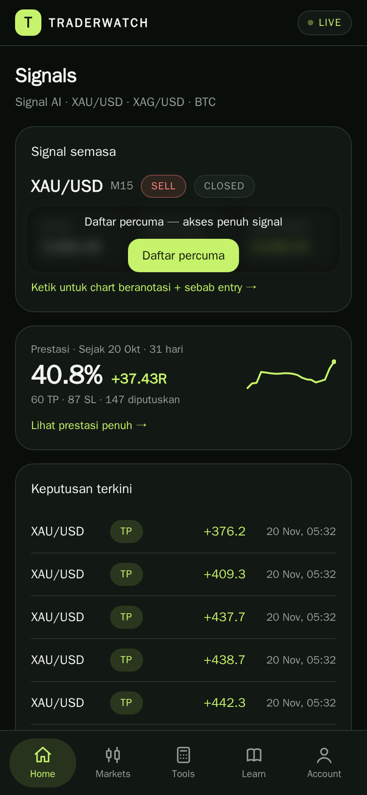
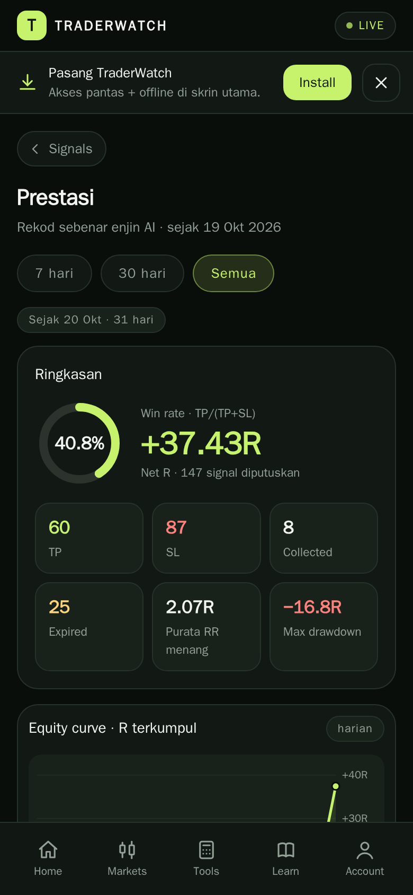
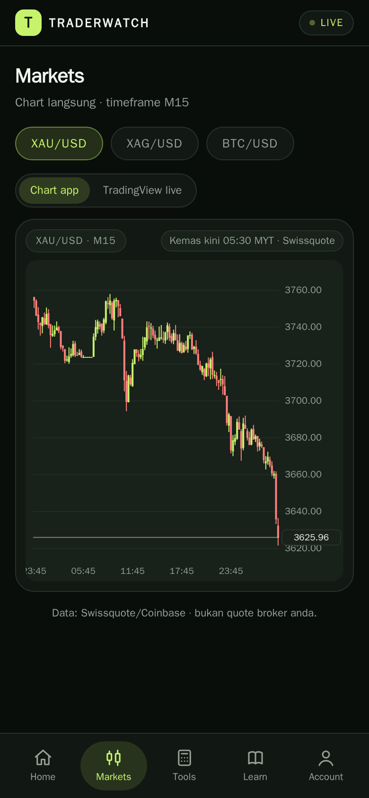
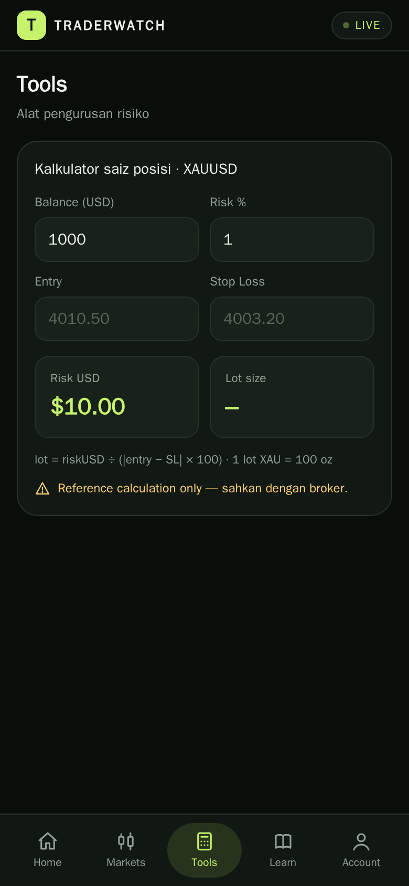
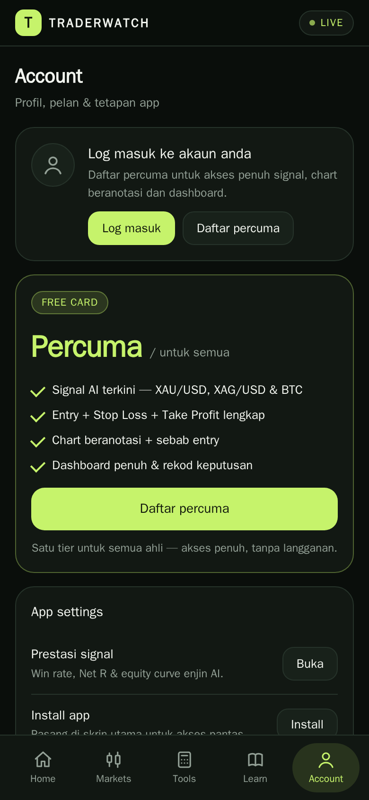

Preview visual laman live. Buka sendiri: traderwatch.org (pelawat) · traderwatch.org/member (ahli) · Log masuk
Mudah alih (390 × 844)
Home / Signals utama

Prestasi rekod penuh

Markets chart

Tools kalkulator posisi

Account Free Card

Desktop (1440 × 900)
Nota: Ini preview skrin pelawat (mod tetamu) — level signal di-blur dengan CTA daftar sebagai funnel marketing. Ahli yang log masuk di /member/ nampak level penuh, chart beranotasi (entry/SL/TP) + sebab entry, dan "Signal anda" terkini per pair. Prestasi papar rekod penuh dari 20 Okt 2026. Halaman preview ini sementara (noindex) — boleh dibuang selepas semakan.